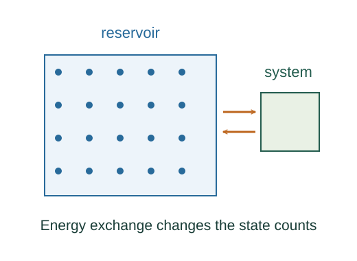

Derive Boltzmann weights from a thermal reservoir
Accessible microstates of an isolated equilibrium total are assigned equal probabilities. A subsystem state is more probable when more reservoir states can accompany it.
What the symbols mean
Ωbath: reservoir multiplicity; Sbath = kB ln Ωbath; T: reservoir temperature; μ: chemical potential; Z: sum of statistical weights.
When this applies
Weak coupling, a large equilibrium reservoir, equal a priori weights for accessible microstates of the isolated total, and negligible reservoir temperature change.
Developing the argument

State the statistical starting postulate
Accessible microstates of an isolated equilibrium total are assigned equal probabilities. A subsystem state is more probable when more reservoir states can accompany it.
Count reservoir partners
If the subsystem has energy Ei, its reservoir has remaining energy Etotal − Ei. Thus subsystem-state probability is proportional to that reservoir multiplicity.
Expand the reservoir entropy
For a fixed-volume, fixed-particle reservoir, reversible first-law changes obey dUbath = T dSbath; hence ∂Sbath/∂Ubath = 1/T. A first-order Taylor expansion gives Sbath(Etotal − Ei) ≈ S₀ − Ei/T.
A closer lookWhy does entropy relate reversible heat and temperature? ↗Exponentiate and normalize
The common exp(S₀/kB) cancels when all probabilities are normalized. The remaining weights are Boltzmann weights; Z is their sum.
Allow particle exchange
Define the reservoir chemical potential through (∂S/∂N)U,V = −μ/T. If the subsystem gains N particles the reservoir loses them; its entropy expansion therefore adds +μN/T.
Sum allowed state occupations
For one quantum state of energy E, set x = exp[−β(E − μ)]. Fermions permit n = 0 or 1, giving ⟨n⟩ = x/(1 + x). Bosons permit n = 0,1,2,…, so geometric sums Σxⁿ and Σnxⁿ give ⟨n⟩ = x/(1 − x). Photons have μ = 0.
A worked example
If one classical state is kBT higher than another, its individual probability is smaller by a factor e, before counting any degeneracy.
Derivation behind this calculation ↗A point to keep straight
The derivation does not prove equal a priori weights from Newton’s laws. That equilibrium postulate and the thermodynamic identification of temperature are explicit foundations.
Check the assumptions and derivation ↗